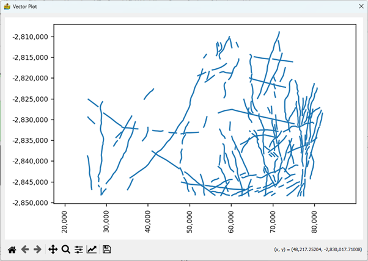

Show Vector Data¶
This is a simple map showing the vector data. For line and polygon data there are no options other than the standard image display settings that allow the user to zoom into specific areas of the map, move the zoomed-in area around, return to the full map, save the map as an image, etc.

More options are available for point data. Data point values are displayed in colour according to a number of colour stretches. This allows for the quick interrogation of data to identify anomalies.
The options on this interface are:
Channel – Select the attribute to be displayed.
Style - Select the display style for the point data. the options are:
Normal
Group using Standard Deviations above Mean
Group by Quartile
Group by K-Means classes
Colour Bar – Select a colormap for the data display.
Standard image display settings that allow the user to zoom into specific areas of the image, move the zoomed in area around, return to the full image, save the image with the colour bar, etc.